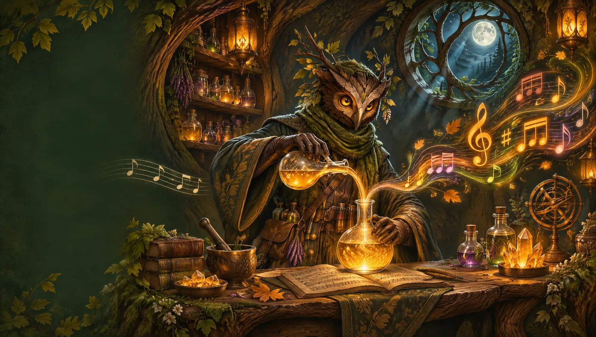

How to reharmonize a song in 5 simple steps
Reharmonizing means keeping the melody and changing the chords underneath it. It’s how a simple song becomes jazzy, moody or cinematic. You can do it with five moves, from very easy to a little daring.

The one rule: respect the melody
Before changing a chord, look at the melody note that sounds over it. The new chord should either contain that note or turn it into a pretty color (a 7th, 9th or 6th). If the melody note clashes, try another option. Your ear will tell you right away.
We’ll reharmonize this simple progression in C:
Step 1: add sevenths
The easiest upgrade. Add one note to each chord and everything sounds warmer and more “grown up”.
Step 2: swap chords that share notes
Chords that share two notes can replace each other. C (C E G) and Am (A C E) share C and E. F (F A C) and Dm (D F A) share F and A. The melody usually still fits, but the mood shifts.
| Original | Try instead | Effect |
|---|---|---|
C | Am or Em | Softer, more emotional |
F | Dm | Smoother motion towards G |
G | Em | Less push, more floating |
Step 3: add a secondary dominant
Any chord can have its own “tension chord” that leads into it. To make Dm feel inevitable, play A7 right before it. To lead into Am, use E7. These chords add a strong sense of motion.
Step 4: borrow a chord
Turn the IV chord into a minor chord for a bittersweet moment. In C, F becomes Fm. It works especially well right before going back home. (We explain this one in detail in Borrowed chords: the Beatles’ favorite trick.)
Step 5: the tritone substitution
This is the jazz move. Replace G7 with D♭7. Both chords share the two notes that create the tension (B and F, also spelled C♭ and F), so D♭7 still wants to go to C, but the bass slides down by a half step. It sounds smooth and sophisticated.
Before and after
Put a few of these moves together and the same four bars sound like a different song:
You don’t have to use every trick at once. Often one well-placed change is enough. Try a move, sing the melody over it, and keep it only if it serves the song.
Try it in Chordseed
Open Enrich my chords in Chordseed, paste your progression and pick a style. It suggests sevenths, substitutions and passing chords, explains each one and plays the result on a real instrument. Free, in your browser.
Open the app →